ECG Blog #411 — Có phải là Wenckebach?
BẠN sẽ đọc bản ghi ở Hình 1 như thế nào — bản ghi được gửi cho tôi mà không kèm thêm thông tin nào?
CÂU HỎI:
- Đây là nhịp gì?
- Có phân ly nhĩ thất không? Nếu có — TẠI SAO?
- Về mặt lâm sàng — bạn sẽ tiếp cận việc đọc bản ghi này NHƯ THẾ NÀO theo cách tiết kiệm thời gian tối ưu?

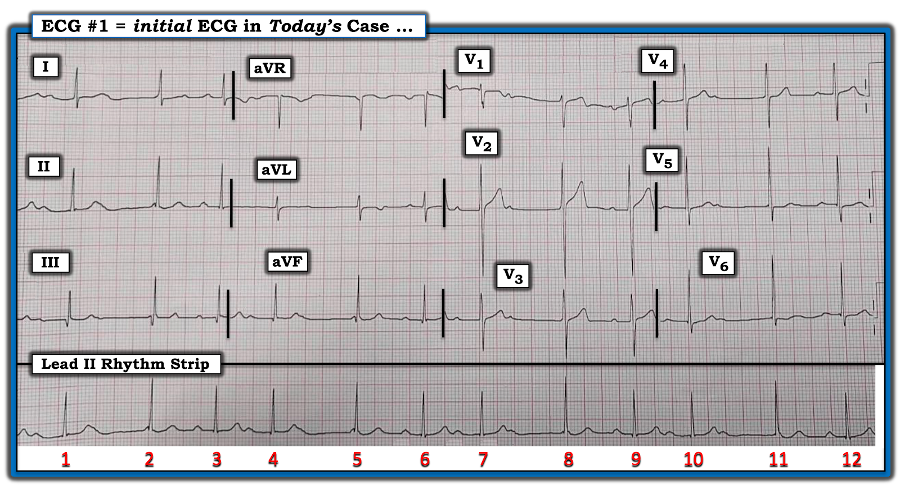
Điểm MẤU CHỐT lâm sàng:
Nếu tôi là nhân viên y tế chịu trách nhiệm chăm sóc bệnh nhân có điện tâm đồ như ở Hình 1 — tôi sẽ tiếp cận bản ghi này theo các giai đoạn tuần tự sau:
- Trước hết tôi sẽ xác định rằng bệnh nhân ổn định huyết động với điện tâm đồ này và nhịp tim này. Giả sử bệnh nhân này đang ổn định, ít nhất là tạm thời — sau đó tôi sẽ tiến hành như sau:
- Tôi sẽ nhìn nhanh dải nhịp chuyển đạo dài.
- XIN NHẤN MẠNH: Nhịp thể hiện ở chuyển đạo II dài (bên dưới bản ghi 12 chuyển đạo ở Hình 1) không phải là một rối loạn nhịp đơn giản — vì vậy thay vì cố gắng đưa ra một chẩn đoán chính xác về nhịp — tôi sẽ dành không quá 5 đến 10 giây để bảo đảm rằng tần số tim hợp lý và có vẻ ổn định (điều mà đúng là có ở Hình 1 — vì nhịp là nhịp trên thất [QRS hẹp ở mọi chuyển đạo] — có thấy một số sóng P — và, dường như có một hình ảnh nhịp theo nhóm (group beating) lặp đi lặp lại (các nhóm 3 nhát), với tần số tim trung bình trong khoảng 60-80 lần/phút).
- Sau đó tôi sẽ dành không quá 5 đến 10 giây để nhìn phần còn lại của điện tâm đồ 12 chuyển đạo nhằm bảo đảm không có tình trạng cấp cứu đang diễn ra cần xử trí ngay lập tức (tức là, Không có nhồi máu cơ tim cấp; Không có tăng kali máu, v.v.).
BÌNH LUẬN:
Mặc dù tôi luôn ủng hộ cách tiếp cận hệ thống cho cả việc đọc nhịp lẫn đọc điện tâm đồ 12 chuyển đạo — việc đọc điện tâm đồ tối ưu trên lâm sàng đòi hỏi phải ưu tiên những phần của bản ghi trước mắt bạn đòi hỏi bạn chú ý ngay lập tức. Sau đó, khi bạn có chút thời gian — Bạn có thể hoàn tất việc đánh giá có hệ thống của mình.
- Về nhịp tim: Đánh giá trong 5 đến 10 giây ban đầu đối với dải nhịp chuyển đạo II dài là tất cả những gì cần thiết vào thời điểm này — vì khoảng thời gian hạn chế này vẫn đủ cho phép bạn xác định: i) Rằng bệnh nhân đang ổn định huyết động; và, ii) Rằng nhịp là nhịp trên thất — với ít nhất một số sóng P, QRS hẹp ở mọi chuyển đạo — và, tần số tim chung trong khoảng 60-80 lần/phút.
- ĐIỂM THEN CHỐT (PEARL) #1 (Điểm nâng cao): Việc phức bộ QRS hẹp, với ít nhất một số sóng P — và một hình ảnh gợi ý nhịp theo nhóm — nên gợi ý cho chúng ta: i) Khả năng có dẫn truyền Wenckebach! — và, ii) Rằng chúng ta cần hỏi kỹ về đau ngực gần đây, đặc biệt chú ý đến phần còn lại của điện tâm đồ 12 chuyển đạo này (tìm kỹ các dấu hiệu nhồi máu cấp hoặc mới xảy ra — vì Wenckebach AV thường gặp trong nhồi máu cơ tim thành dưới cấp). Nhận ra dẫn truyền Wenckebach sẽ dễ hơn nhiều NẾU bạn chủ động tìm nó!
Về Điện tâm đồ 12 Chuyển đạo:
Áp dụng cách tiếp cận hệ thống mà tôi ưa dùng cho đọc điện tâm đồ 12 chuyển đạo (như đã trình bày chi tiết trong ECG Blog #205):
- Tần số & Nhịp: Như đã nêu ở trên — có một nhịp trên thất đều với một số sóng P, nhịp theo nhóm, và tần số thất chung chấp nhận được trong khoảng ~60-80 lần/phút.
- Các khoảng (PR-QRS-QTc): Khoảng PR thay đổi — QRS hẹp — QTc có vẻ bình thường (Thấy rõ nhất ở các chuyển đạo V2,V3).
- Trục: Bình thường (khoảng +60 độ).
- Lớn các buồng tim: Tùy theo tuổi của bệnh nhân — có thể có tiêu chuẩn điện thế của LVH (tức là, S sâu nhất ở V1,V2 + R cao nhất ở V5,V6 ≥35 mm — NẾU bệnh nhân ≥35 tuổi).
Về Thay đổi Q-R-S-T:
- Sóng Q: Thấy các sóng q nhỏ, ý nghĩa không chắc chắn, ở các chuyển đạo thành dưới.
- Tăng tiến sóng R: Bình thường, với vùng chuyển tiếp (nơi chiều cao sóng R trở nên lớn hơn độ sâu sóng S) — xảy ra bình thường, ở đây là ở chuyển đạo V4.
- Thay đổi sóng ST-T: Có một số chỗ sóng ST-T dẹt không đặc hiệu, và có lẽ sóng T đảo ngược nông ở chuyển đạo aVL. Mức ST chênh lên nhẹ mà chúng ta thấy ở chuyển đạo V2 là thường gặp và bình thường.
- NHẬN ĐỊNH LÂM SÀNG: Điện tâm đồ ở Hình 1 cho thấy các bất thường sóng ST-T không đặc hiệu — nhưng không có gì trông giống cấp tính.
==================================
Xem kỹ hơn Nhịp trong CA BỆNH hôm nay:
Như đã ôn lại trong ECG Blog #185 — Tôi ưa dùng Cách tiếp cận Ps, Qs, 3R để đọc nhịp tim một cách hệ thống và tiết kiệm thời gian.
- ĐIỂM THEN CHỐT (PEARL) #2: Khi tìm sóng P — tôi thấy dễ nhất là trước hết xác định những sóng P mà tôi chắc chắn. Tôi đã làm điều này bằng các mũi tên ĐỎ ở Hình 2.
- Sự hiện diện của nhiều sóng P ĐỎ ( = chắc chắn có) cách đều nhau ở Hình 2 gợi ý: i) rằng rất có khả năng nhịp nhĩ nền sẽ đều trong suốt dải nhịp chuyển đạo II dài; và, ii) rằng khoảng P-P giữa bất kỳ 2 mũi tên ĐỎ liên tiếp nào sẽ gợi ý cho chúng ta vị trí có thể tìm thấy các sóng P còn lại (bị che khuất một phần).
- Dùng compa đo (calipers) có thể giúp khẳng định rằng nhịp nhĩ nền ở Hình 2 quả thực sự đều. Với compa đo — chỉ mất vài giây để khẳng định điều này!
- Các mũi tên HỒNG làm nổi bật rằng "cái bướu" nhỏ đến đúng lúc ở ngay khởi đầu QRS của nhát #2 và #5 rõ ràng là 2 sóng P đúng lúc bổ sung.
- Việc hoàn tất "cuộc tìm kiếm sóng P" sau đó có thể thực hiện dễ dàng bằng cách nhận ra sự biến dạng tinh tế nhưng không thể nhầm lẫn dưới các mũi tên TÍM ở gần cuối sóng T của nhát #1 và 4 — và ở ngay khởi đầu QRS của nhát #8 và #11.

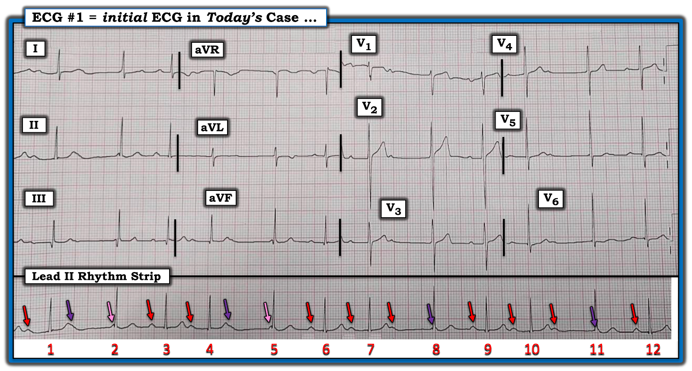
ĐIỂM THEN CHỐT (PEARL) #3: Nhận ra rằng có nhịp theo nhóm thật sự, đi kèm với một nhịp nhĩ nền đều — gợi ý mạnh mẽ rằng có một dạng blốc AV độ 2 nào đó trong đó có dẫn truyền Wenckebach (tức là, sự hiện diện của một nhịp sóng P nền đều đặn là một thành phần thiết yếu của các dạng blốc AV điển hình).
- Tập trung vào khái niệm này giúp nhận ra 3 nhóm thật sự ở Hình 3 (trong các hình chữ nhật TRẮNG nét chấm). Hãy lưu ý sự giống nhau đến kỳ lạ về độ dài khoảng R-R giữa 2 nhát đầu tiên trong mỗi nhóm (tức là, khoảng R-R giữa các nhát #2-3; 5-6; và 8-9) — cũng như khoảng R-R giữa 2 nhát cuối cùng trong mỗi nhóm (tức là, khoảng R-R giữa các nhát #3-4; 6-7; và #9-10) — cũng như độ dài khoảng R-R của các khoảng ngưng ngắn ngăn cách giữa các nhóm (tức là, khoảng R-R giữa các nhát #1-2; 4-5; 7-8; và 10-11). Mức độ đối xứng như thế về độ dài tương đối của các khoảng R-R trong mỗi nhóm nhát không phải là ngẫu nhiên!

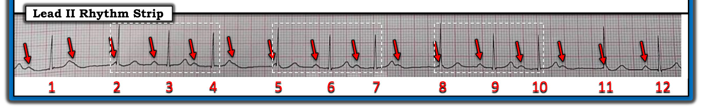
Hình 3: Các mũi tên ĐỎ làm nổi bật rằng nhịp nhĩ trên dải nhịp chuyển đạo II dài là đều. Lưu ý 3 nhóm thật sự (trong các hình chữ nhật TRẮNG nét chấm).
ĐIỂM THEN CHỐT (PEARL) #4: Chúng ta biết rằng ít nhất có phân ly nhĩ thất thoáng qua trong nhịp hôm nay — vì khoảng PR của một số sóng P xoang đến đúng lúc rõ ràng là quá ngắn để có thể dẫn truyền (tức là, Mặc dù xuất hiện đúng lúc — các sóng P mũi tên TRẮNG trước các nhát #2,5,8 và 11 ở Hình 4 — không có đủ thời gian để dẫn truyền bình thường qua nút AV).
- Vì các nhát #2,5,8 và 11 đều có phức bộ QRS hẹp — và không có sóng P xoang nào đi trước với khả năng dẫn truyền thực tế — điều này có nghĩa là 4 phức bộ QRS này là các nhát bộ nối.
- Lưu ý rằng mỗi nhát này đều đi sau một khoảng R-R tương tự nhau, chỉ dưới 5 ô lớn một chút — tương ứng với tần số thoát bộ nối gia tốc rất nhẹ khoảng ~65 lần/phút.
- Dù vậy — Chúng ta không biết được liệu các sóng P mũi tên TRẮNG xuất hiện ở khởi đầu QRS của các nhát #2,5,8 và 11 có thể dẫn truyền được hay không — NẾU chúng có cơ hội để làm vậy (tức là, NẾU tần số thoát bộ nối chậm hơn 65 lần/phút).
ĐIỂM THEN CHỐT (PEARL) #5: Mặc dù có ít nhất phân ly nhĩ thất thoáng qua — nhịp ở Hình 4 không phải là blốc AV hoàn toàn.
- Phần lớn các trường hợp có blốc AV hoàn toàn — tần số thoát (dù là nhịp thoát bộ nối hay nhịp thoát thất) sẽ đều. Sự không đều rõ ràng của đáp ứng thất ở Hình 4 — ngay lập tức cho chúng ta biết đây không phải là blốc AV hoàn toàn.
- Các phức bộ QRS xuất hiện sớm hơn dự kiến nhiều khả năng là các nhát được dẫn truyền! (tức là, Do đó các nhát #4,7 và 10 ở Hình 4 nhiều khả năng được dẫn truyền — và các nhát #3,6,9 và 12 cũng có thể được dẫn truyền).
ĐIỂM THEN CHỐT (PEARL) #6: Theo ĐIỂM THEN CHỐT #4 — chúng ta đã xác định rằng có phân ly nhĩ thất thoáng qua ở Hình 4 (vì các nhát #2,5,8,11 rõ ràng không được dẫn truyền). Dường như có 2 lý do cho phân ly nhĩ thất thoáng qua này trong nhịp hôm nay:
- Như đã ôn lại trong ECG Blog #192 — 3 Nguyên nhân gây phân ly nhĩ thất là: i) Do mặc định (default); ii) Do chiếm quyền (usurpation); và, iii) Một dạng blốc AV độ 2 hoặc độ 3 nào đó.
- Bản ghi hôm nay thú vị — ở chỗ lý do của phân ly nhĩ thất thoáng qua (tức là, các sóng P mũi tên TRẮNG ở Hình 4 không được dẫn truyền) — dường như là sự kết hợp giữa các nhát bộ nối gia tốc nhẹ (các nhát #2,5,8 và 11) — và blốc AV độ 2 gây ra các khoảng ngưng nhẹ sau các nhát #1,4,7 và 10.
ĐIỂM THEN CHỐT (PEARL) #7: Xem kỹ hơn ở Hình 4 các sóng P trong mỗi nhóm 3 nhát — cho chúng ta biết có blốc AV độ 2, Mobitz loại I ( = Wenckebach AV) dựa trên các dấu hiệu sau:
- Như đã nêu — các sóng P mũi tên TRẮNG trong mỗi nhóm không dẫn truyền xuống thất — vì khoảng PR quá ngắn.
- Dù vậy — Chúng ta biết rằng sóng P kế tiếp trong mỗi nhóm (tức là, các sóng P mũi tên XANH nhạt) — có dẫn truyền xuống thất, vì các khoảng PR đi trước các nhát #3,6,9 và 12 đều bằng nhau!
- Tiếp theo là các sóng P mũi tên XANH đậm cũng được dẫn truyền — nhưng với khoảng PR tăng nhẹ so với khoảng PR của sóng P XANH nhạt. Một lần nữa — Chúng ta biết rằng các sóng P mũi tên XANH đậm được dẫn truyền — vì các khoảng PR đi trước các nhát #4,7 và 10 đều bằng nhau!
- Sóng P cuối cùng trong mỗi nhóm (tức là, các sóng P mũi tên VÀNG) — không được dẫn truyền — qua đó hoàn tất chu kỳ Wenckebach AV với khoảng PR kéo dài dần cho đến khi có một nhát bị rớt.
- Các đặc điểm điển hình khác của Wenckebach AV ở Hình 4 gồm: i) QRS hẹp (Mobitz II thường có QRS rộng — vì nó xuất phát ở vị trí thấp hơn trong hệ thống dẫn truyền); ii) Khoảng R-R ngắn dần trong mỗi nhóm (các khoảng R-R giữa các nhát #3-4; 6-7; và 9-10 — ngắn hơn các khoảng R-R giữa các nhát #2-3; 5-6; 8-9); và, iii) Khoảng ngưng chứa nhát bị rớt ngắn hơn hai lần khoảng R-R ngắn nhất.

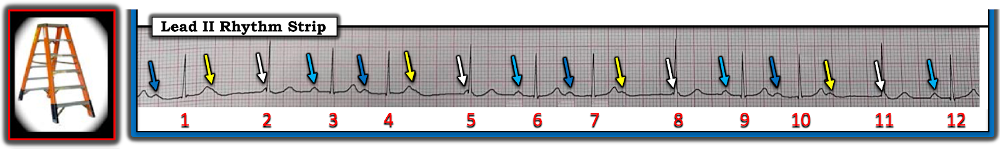
TÓM TẮT:
Nhịp trong ca hôm nay là nhịp xoang (tức là, các sóng P xuất hiện đều đặn) — kèm blốc AV độ 2, Mobitz loại I ( = Wenckebach AV). Mỗi nhóm Wenckebach 3 nhát bắt đầu bằng một nhát bộ nối gia tốc nhẹ (gây ra phân ly nhĩ thất thoáng qua).
- Tần số thất chung trên bản ghi hôm nay, ở mức ~60-80 lần/phút, hẳn là đủ để tưới máu đầy đủ.
- Mặc dù Mobitz I thường đi kèm với nhồi máu cơ tim thành dưới cấp — điện tâm đồ 12 chuyển đạo trong ca hôm nay không gợi ý bất kỳ thay đổi sóng ST-T cấp tính nào.
======================
GIẢN ĐỒ BẬC THANG (LADDERGRAM):
Để làm rõ cơ chế của nhịp hôm nay — tôi đã dựng một giản đồ bậc thang (laddergram) kèm mô tả từng bước các sự kiện. Tôi bắt đầu với Hình 5.
- LƯU Ý: Để ôn lại những Điều cơ bản về CÁCH đọc (và vẽ) giản đồ bậc thang — Xem ECG Blog #188).

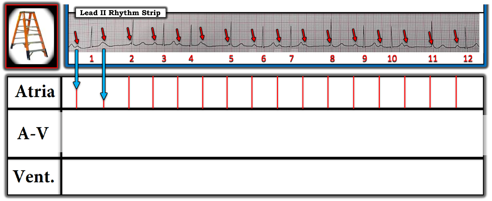

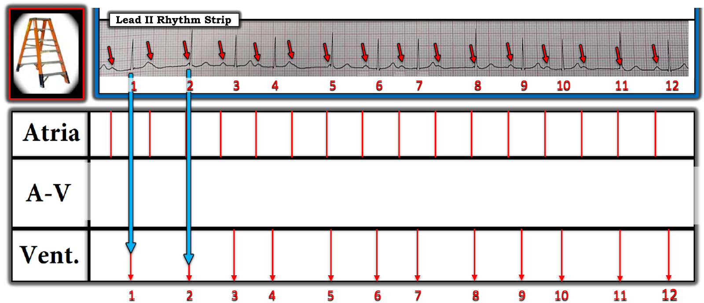
LƯU Ý: Tôi thấy Power Point là tối ưu để vẽ giản đồ bậc thang — vì nó cho phép dễ dàng nhân bản các thành phần của giản đồ và dịch chuyển theo chiều thẳng đứng một cách chính xác để bảo đảm các thành phần của giản đồ nằm đúng bên dưới các sóng P và phức bộ QRS trên dải nhịp gốc.

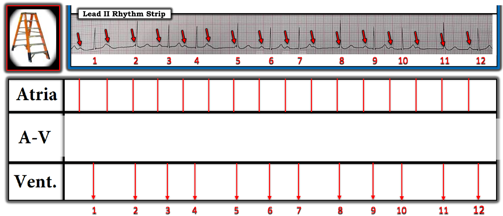

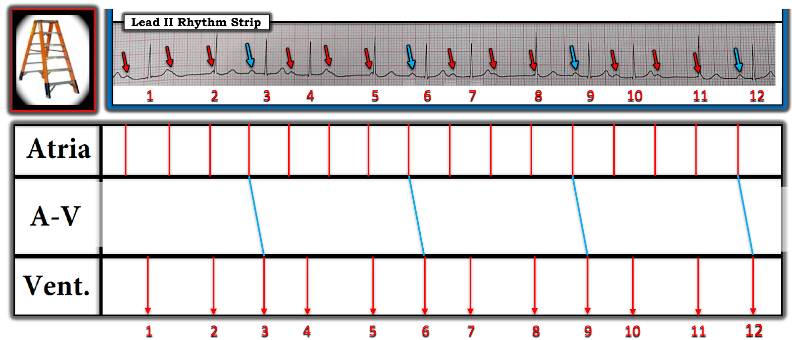

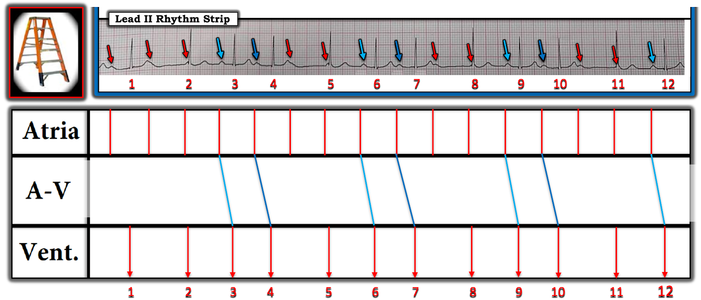

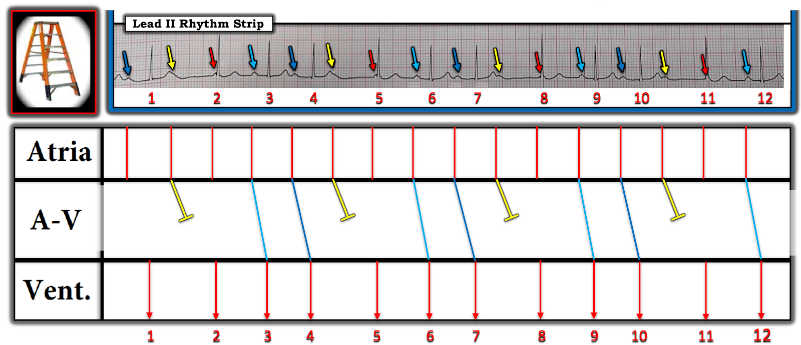

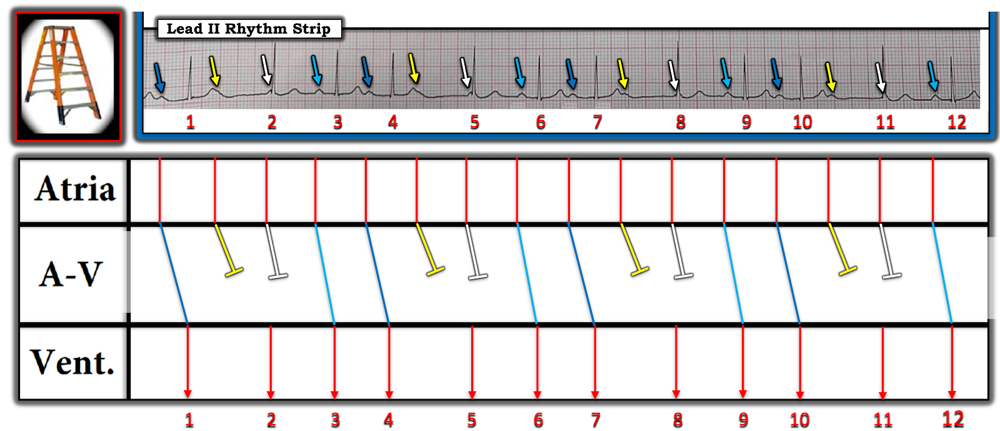

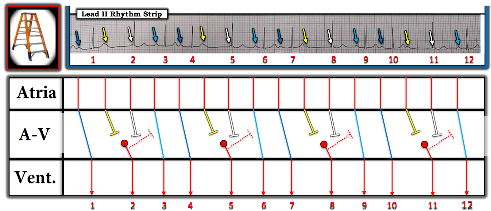

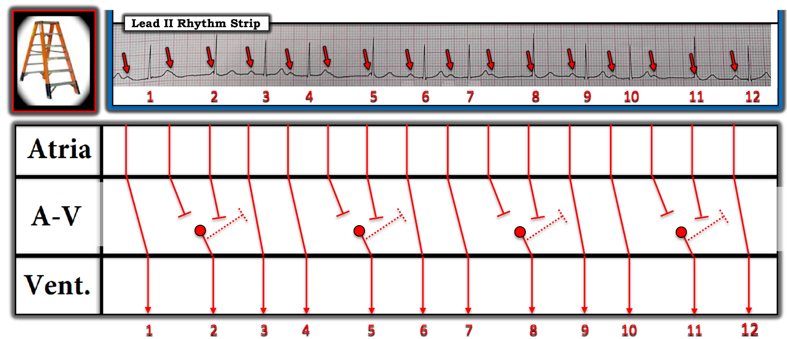
ĐIỂM NÂNG CAO CUỐI CÙNG:
BẠN có nhận thấy ở Hình 13 — rằng QRS của mỗi nhát bộ nối ( = các nhát #2,5,8 và 11) hơi cao hơn QRS của 8 nhát còn lại trên bản ghi này không?
- Nhận xét tinh tế nói trên đôi khi có thể là một manh mối rất hữu ích cho thấy những nhát trông hơi khác này không phải là nhát dẫn truyền từ xoang — mà xuất phát từ nút AV.
- Lý do các nhát thoát từ nút AV đôi khi trông hơi khác so với các nhát dẫn truyền từ xoang — là vì vị trí khởi phát chính xác trong nút AV nơi các nhát này phát sinh có thể hơi khác với đường đi trong nút AV mà các nhát dẫn truyền từ xoang đi qua.
- XIN NHẤN MẠNH: Chúng ta không cần đến manh mối này để biết rằng các nhát #2,5,8,11 trên bản ghi hôm nay là các nhát bộ nối — vì rõ ràng các sóng P đi trước các nhát #2,5,8,11 quá gần QRS để có thể được dẫn truyền. Nhưng có những lúc sẽ không dễ nhận ra một phức bộ QRS nào đó là nhát dẫn truyền từ xoang hay nhát thoát bộ nối — khi đó, nhận xét rằng hình thái QRS hơi khác biệt có thể cho thấy những nhát nào là nhát thoát bộ nối (Xem ECG Blog #63 — để xem một ví dụ lâm sàng về hiện tượng này!).
==========================================
Lời cảm ơn: Tôi xin cảm ơn ไกรสร เต็ง (từ Bangkok, Thái Lan) đã chia sẻ ca bệnh và bản ghi này.
==========================================

==============================
Các bài ECG Blog liên quan đến ca hôm nay:
- ECG Blog #185 — Ôn lại Hệ thống của tôi để đọc nhịp, theo Cách tiếp cận Ps, Qs & 3R.
- ECG Blog #205 — Ôn lại Hệ thống của tôi để đọc điện tâm đồ 12 chuyển đạo.
- ECG Blog #245 — Ôn lại chẩn đoán LVH trên điện tâm đồ.
- ECG Blog #188 — Ôn lại cách đọc và vẽ Giản đồ bậc thang (kèm ĐƯỜNG DẪN tới hơn 90 ca có giản đồ bậc thang — nhiều ca có minh họa tuần tự từng bước).
- ECG Blog #192 — 3 Nguyên nhân gây phân ly nhĩ thất.
- ECG Blog #191 — Ôn lại sự khác biệt giữa phân ly nhĩ thất và blốc AV hoàn toàn.
- ECG Blog #389 — ECG Blog #373 — và ECG Blog #344 — để ôn lại một số ca minh họa "giải quyết vấn đề blốc AV".
- ECG Blog #63 — Ôn lại một ca blốc AV độ 2, Mobitz loại I kèm các nhát thoát bộ nối.
- ECG Blog #267 — Trình bày giản đồ bậc thang từng bước, với việc dựng giản đồ cho một ca Mobitz I có nhiều hơn một cách giải thích khả dĩ.
- ECG Blog #404 (ECG Video) — áp dụng Cách tiếp cận Ps,Qs,3R cho một ca blốc AV độ 2 ( = Mobitz I hay Mobitz II hay Không phải cả hai).
- ECG Blog #405 (ECG Video) — áp dụng Cách tiếp cận Ps,Qs,3R cho một ca phân ly nhĩ thất hay blốc AV hoàn toàn (Khác nhau thế nào?).

PHẦN BỔ SUNG (6/1/2024):

ECG Video (Media PEARL #52) dài 15 phút này — Ôn lại 3 loại blốc AV độ 2 — cộng thêm — thuật ngữ khó định nghĩa blốc AV "mức độ cao". Tôi bổ sung tài liệu này bằng 2 tài liệu phát tay PDF sau đây.

- Section 2F (6 trang = Câu trả lời "ngắn") trong cuốn sách ECG-2014 Pocket Brain của tôi cung cấp phần ôn tập ngắn gọn bằng văn bản về các blốc AV.
- Section 20 (54 trang = Câu trả lời "dài") trong cuốn ACLS-2013-Arrhythmias bản mở rộng (Expanded Version) của tôi bàn luận chi tiết về việc các blốc AV LÀ GÌ — và không phải là gì!

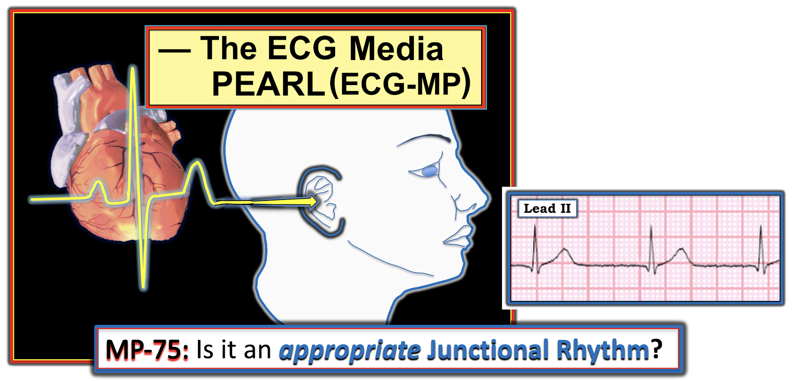
ECG Media PEARL #75 (6:10 phút Audio) — Ôn lại cách nhận biết LIỆU một nhịp bộ nối (nút AV) là bệnh lý hay phù hợp (sinh lý)?